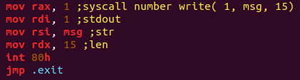

前言
以前在《IDApro权威指南》上了解过linux的系统调用，知道了int 80h和syscall，当时也没有做深入了解，就以为这两条指令是等价的
直到最近在钻研汇编，写程序的时候发现原来一直理解错了
例子

我的本意是在终端打印msg，不小心把代码写成了这样，结果db调试时出现了以下报错

把代码改成这样后，程序成功运行

于是我意识到了int 80和sycall的区别
syscall
syscall时linux x86_64进入内核模式的默认方法，这条指令在i386上不可使用，syscall的系统调用号存放在rax中，参数依次存放在rdi，rsi，rdx，r10，r8和r9中，最多传递六个参数
int 80h
int 80h指令可以在i386上使用，程序执行int 80h时就会中断并陷入内核模式，int 80h的系统调用号存放在eax中，参数依次存放在ebx，ecx，edx，esi和edi中，最多传递五个参数
区别
通过以上的描述不难看出，syscall和int 80h最大的区别在于传参规则不同，所以如果我们把程序改成这样，还是可以正常运行的，但是不推荐怎么做，x86_64位下还是推荐使用默认的syscall进行系统调用